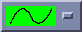
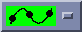

To draw a new line:
Select the Modify tool.

The Modify menus appear. (see Figure 14.3)
Pick the line to modify. (see Pick an object, (Section 9.4.1))
The picked line turns yellow, with blue boxes at both ends.
Select the "Freehand"  or "Curve" drawing tool. 
Draw the new line segment. Start or end the line as close to the existing line as possible.
The way the line gets redrawn depends on how the new segment was drawn.
If the new segment starts and ends on the existing line, the new line segment adopts the direction of the existing line. (see Figure 14.4)
If the new segment starts, but does not end, on the existing line, the new line segment connects to the existing line in the direction it was drawn. Thus the end of the existing line is replaced by the new segment. (see Figure 14.5)
If the new segment ends, but does not start, on the existing line, the new line segment connects to the existing line in the direction it was drawn. Thus the start of the existing line is replaced by the new segment. (see Figure 14.6)
If the new segment starts and ends too far away from the existing line, the new line segment will replace the existing line. (see Figure 14.7)
The new line turns blue and the original line remains yellow.
If the line is acceptable, click the mouse button and select . If the line is not acceptable select and the line will remain selected you can attempt the edit again.